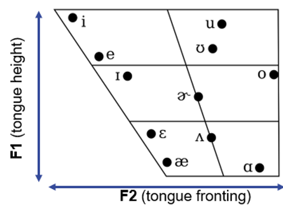

4 Working with text and speech
When we analyse text, we focus on tokens or sequences of tokens and then compare the frequency of tokens or patterns in on corpus to their use in another corpus.
When analyzing speech, we do not focus on tokens but rather on features of speech sounds and compare these features across sounds and groups of speakers
The procedures also differ (but also show commonalities):
Text: finding a corpus : processing the corpus using corpus software (AntConc | R): analyzing information (Excel | R)
Speech: finding/recording audio data : alignment + segmentation (BasMaus) : extracting speech features (Praat | ?R) : analysing information (Excel | R)
How do we analyse speech

In this course, we cannot go into detail as analysing speech is very diverse and versatile. Therefore, we will *focus only on analysing vowel sounds**.
**Features of vowel sounds (in English)*
In English, vowel sounds differ in:
Length: /i:/ and /I/ differ mostly in length: compare heed and hid
Tongue position (formants): /i:/ and /u:/ differ mostly in tongue position: when we produce /i:/, our tongue is raised to the front of our mouth while the tongue is raised to the back of our mouth when we produce /u:/
What are formants?

What are formants and do they have to do with tongue position?
Formants are concentration of acoustic energy at a certain frequency
First formants (F1) inversely correspond to the tongue height
Second formants (F2) and inversely correspond to tongue fronting
We can use the software Praat to extract features of speech from audio data.
What are spectrograms?
Let’s have a look at the three spectrograms of, and <who’d>. Try to understand what they are showing and compare them (can you see differences?).
Today’s task
Today, we will perform a case study on extracting vowel features using BasMaus, Praat, and Excel.
The case study will show
how we use BasMaus to force align the transcript to audio data and to generate TextGrids
We use Praat to correct the force alignment and to extract formant frequencies
We use Excel to analyse and visualize the resulting data in a vowel chart
1. First, open the folder with your recordings of the prompts.
IMPORTANT - THIS WOULD HAVE BEEN HOMEWORK!
For the homework, students would have been asked
to record themselves in Praat producing the prompt words (shown below).
As a result, every student would have two files:
1. a txt-file with the prompt words and
2. a wav-file with the recording of the prompt words.
hVd |
|---|
heed |
heed |
heed |
hid |
hid |
hid |
head |
head |
head |
had |
had |
had |
hod |
hod |
hod |
hawed |
hawed |
hawed |
hood |
hood |
hood |
whod |
whod |
whod |
Let’s explore the spectrograms of the recordings together!
- Make sure that the recording has the same name as the prompt words
(in my case they are called “hVd_MS.txt” and “hVd_MS.wav”)
- Go to WebMAUS Basic
Select English (any of the models, US, AU, GB, etc., will work)” as your Language and drag-n-drop your txt- and wav-file into the Files box.